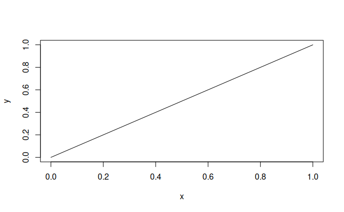
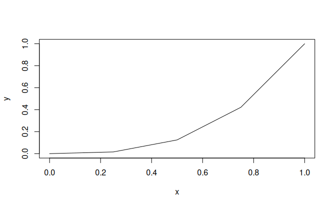
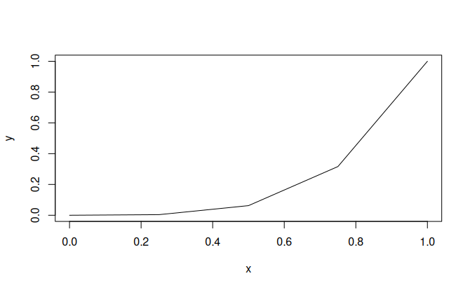
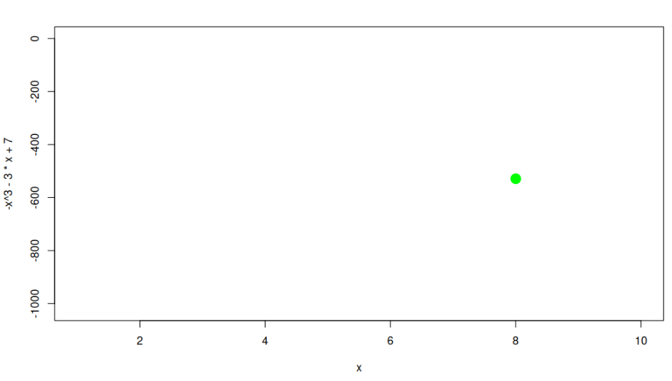
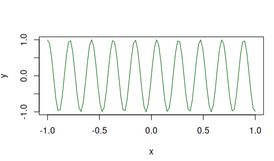
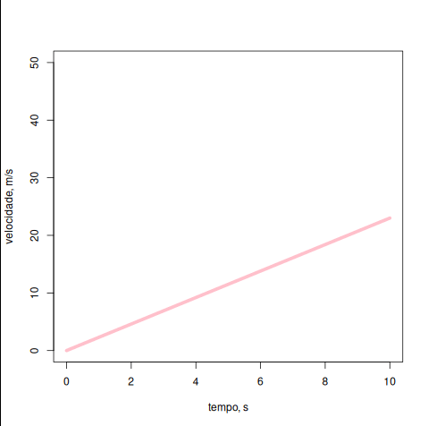
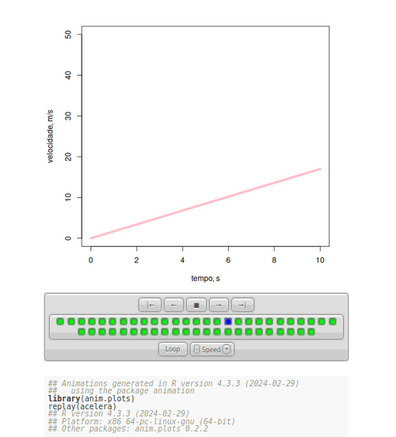

anim.curve(expr, x = NULL, from = 0, to = 1, n = 255, times, ...)
Obs: outras atribuições do plot são iguas às do comando plot (cex, pch, type, etc)
expr: expressão com 2 argumentos, ou função de x em t;
n: representa o no. de pontos que serão gerados pela função ao longo do eixo x (se type="l", faz a linha, que pode ser meio ríspida se houver poucos pontos);
x: valores de x em que a função será expressada;
from=, to= : substitui o "x" ;
times: vetor de valores de t no qual a função será avaliada. Cada valor cria um frame da animação.Animando um gráfico básico - o pacote anim.plots
Uma palavrinha antes…
Daqui em diante serão apresentados alguns pacotes do
R que permitem animações, interatividade e simulações gráficas e de geovisualização. Cada pacote será brevemente descrito, sucedendo-se sua ilustração com temas contidos no MAPA - Material de Apoio Pedagógico para Aprendizagens da Secretaria de Educação de Minas Gerais. Será fornecida uma breve apresentação de cada pacote, o problema e seu emprego ilustrado junto ao MAPA, o trecho de código para execução/modificação no RStudio, seu resultado, e as vantagens/desvantagens aparentes de cada pacote.
Para facilitar o entendimento de cada pacote, optou-se por apresentar uma sequência de definição, sintaxe, exemplos gerais, ilustração do MAPA, sugestões, e referências.
O pacote anim.plots
Definição:
O pacote anim.plots é uma biblioteca para animação de gráficos elaborados pelo sistema básico desses do
R (basic), tal como visto na ?@sec-basico. Ele permite a animação de gráfico de pontos, curvas, linhas, barras, contorno, e histograma, entre outros.Sintaxe:
Exemplos gerais:
Agora sim, animação em gráficos !! Após instalar o pacote, copie o trecho que segue e reproduza-o num script do RStudio.
library(anim.plots) # carrega o pacote
anim.curve(x^t, times=1:5, n=5) # anima uma linha com função x^t, com 5 frames variando no expoente da equação de 1 a 5 O gráfico gerado na aba de Plots do RStudio deverá parecer-se com uma animação na qual uma linha do gráfico torna-se progressivamente côncava durante 5 segundos. Se não der certo de primeira, rode a linha da animação novamente (costuma funcionar!). Como não é possível demonstrar isso numa página estática, segue o resultado do código, embora também estático.




Como mencionado, é possível aplicar vários argumentos do comando
plot na animação. Experimente variar o símbolo e a cor, tal como segue:library(anim.plots) # carrega o pacote
anim.curve(x^t, times=1:5, n=5, type="p", col="darkgreen", cex=2, pch=16) # t vai de 1 a 5, com 5 pontos no gráfico, mas com cor, tipo (pch) e tamanho (cex) do símbolo Outra forma interessante de animar um gráfico pelo pacote
anim.plots consiste em visualizar um ponto apenas no plot, caminhando ao longo da função. O trecho abaixo exemplifica essa situação visualizada na aba Plotsdo RStudio.library(anim.plots)
x=1:10 # sequência de 1 a 10, e com intervalo unitário
anim.plot(x, -x^3-3*x+7, times=1:10,
col="green", pch=19, cex=2) # cor, tipo e tamanho do símbolo Como não é possível repassar aqui a simulação, segue uma imagem ilustrativa de seu resultado.

Outra animação bem legal que ilustra o pacote envolve a formação de uma curva senoide no tempo. Veja o trecho simples abaixo, e reproduza-o no RStudio.
anim.curve(sin(x*t), times=1:30, n=100, speed=12, col="darkgreen", from=-1, to=1) ## Salvando a animação
O
anim.plots apresenta o resultado da animação dentro do ambiente do RStudio. Isso não é muito prático para ilustrar alguma situação gráfica em animação, posto que há necessidade dos programas, abertura de arquivo, compilação, etc. Assim, é desejável que a animação seja armazenada num arquivo simples. Para o
anim.plots é possível salvar o arquivo como uma imagem animada em diversos formatos, como GIF (imagem) ou HTML (navegador). Dessa maneira, para ilustrar algum gráfico animado, basta abrir o arquivo em qualquer computador ou dispositivo móvel. O comando com os argumentos opcionais de formato de arquivo é:anim.save(obj, filename, gif = "GIF", mp4 = "Video", swf = "SWF", html = "HTML", tex = "Latex") # os argumentos vão entre parênteses
Onde:
obj = o nome temporário da animação
filename = nome do arquivo de animação a salvar
gif, mp4, swf, html, tex = alternativamente, o atributo do arquvio de animaçãoUm exemplo do MAPA
Para ilustrar o salvamento de uma animação, será retomado o exemplo de movimento acelerado que consta da ?@fig-movAcelera. Segue o código e uma imagem estática do resultado. A animation image salva como “acelera.gif” em seu computador, e imediatamente apresentada num editor de imagens.
acelera <- anim.curve(x*t, times=1:50/10, from=0, to=10, type="l", col="pink", lwd=5, xlab="tempo, s", ylab="velocidade, m/s") # lwd é a espessura da linha
anim.save(acelera, "acelera.gif")
anim.plots para exemplificar o efeito da aceleração no tempo, e a partir de relação gráfica constante no MAPA, 1o. Bimestre de C. Natureza e Suas Tecnologias, p.136, 2024.Salvando em HTML
O armazenamento do arquivo de animação em HTML possui algumas características adicionais interessantes. Primeiramente, um arquivo HTML pode ser lido em qualquer browser, não sendo necessário conexão à internet. Além disso, o formato salvo permite selecionar os quadros (frames) da animação, variar a velocidade de sua apresentação, além da visualização do código empregado para a compilação. Para o exemplo de aceleração acima, o trecho de código e um resultado estático são apresentados a seguir.
acelera <- anim.curve(x*t, times=1:50/10, from=0, to=10, type="l", col="pink", lwd=5, xlab="tempo, s", ylab="velocidade, m/s") # lwd é a espessura da linha
anim.save(acelera, "acelera.html")
Se desejar outros exemplos e variações para a função
anim.plots, experimente também a função anim.curve fornecida individualmente abaixo. Para salvar, contudo, será necessário adaptar o comando de salvamento anterior. Outros exemplos mais complexo são visualizados abaixo. Basta copiar, colar, e rodar os trechos individualmente num script do
R para observar seu efeito.## Alguns exemplos:
library(anim.plots) # carrega o pacote
anim.curve(x^t, times=1:5, n=5, type="p", col="darkgreen", cex=2, pch=15) # t vai de 1 a 5, com 5 pontos no gráfico
anim.curve(x^t, times=1:5, n=10, type="p") # t vai de 1 a 5, com 10 pontos no gráfico
anim.curve(x^t, times=1:10, n=10, type="p") # t vai de 1 a 10, formando 10 frames, e com 10 pontos no gráfico
anim.curve(x^t, times=1:10, n=10, type="p", speed= 5) # t vai de 1 a 10, com 10 pontos no gráfico, e velocidade 5x maior
anim.curve(x^t, times=1:10/5, n=10, type="p") # t vai de 1 a 10, com 10 pontos no gráfico, com o 5x a velocidade, mas com desenho diferente !
anim.curve(x^t, times=1:10/1, n=10, type="p") # t vai de 1 a 10, com 10 pontos no gráfico
anim.curve(x^t, times=1:10/2, n=10, type="p") # t vai de 1 a 10, com 10 pontos no gráfico, mas com o dobro da velocidade do anterior